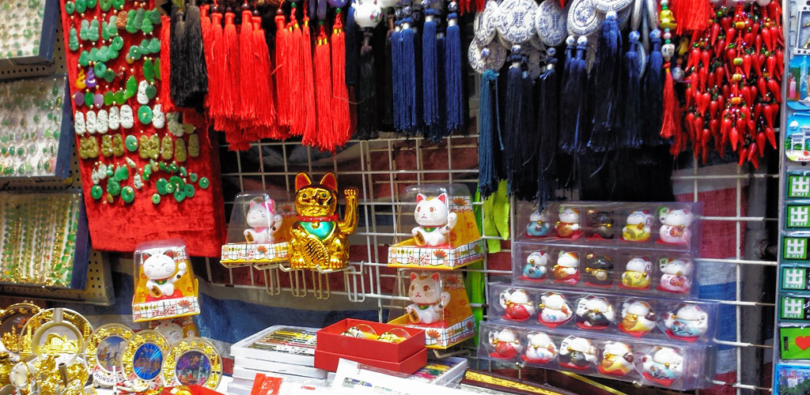
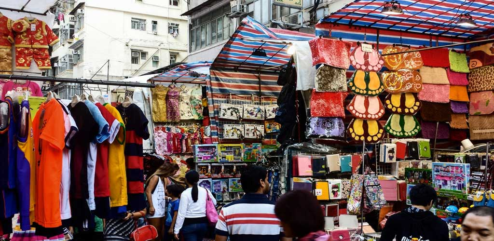
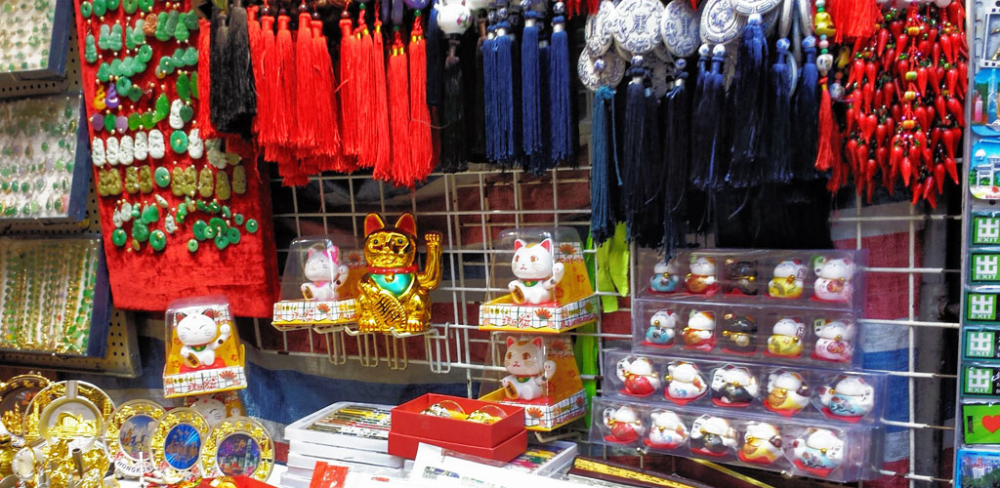
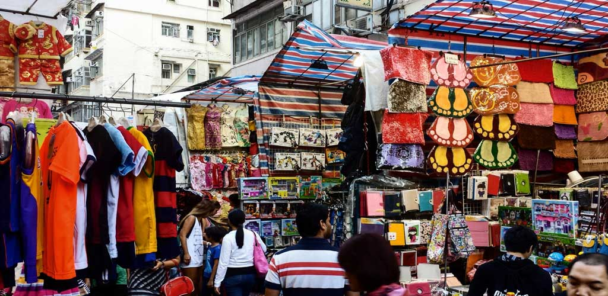

Ladies Market > Opening Hours
Opening Hours
What time does Ladies Market open?
As a public street market of independent vendors there are no set opening hours or trading days. However in general you'll find everything ready by noon with some vendors ready a little earlier. The Ladies Market is open every day of the year except the first day of the Chinese New Year.
Officially the street is closed to all traffic from 4Pm until Midnight on all days other than Sundays and holidays. On those days the prohibition on cars starts at Noon and runs until Midnight.
In practice it is hard for any car or van to go along the road after 10am in the morning and the only ones I have seen try this are emergency vehicles such as fire engines which sometimes go through to e ensure that the passage is big enough for them, and perhaps to remind stall holders about the dangers of fire.
Here is what the street looks like early in the day at 9:30am in the morning when most stalls are still being set up. But as you can see even at this early hour, before the road is official closed to traffic, there are some shoppers and some stalls ready for business.
Closing times
When does Ladies' Market Close?
Unlike street markets in western countries the markets of Asia tend to open late, with cooler temperatures in the evening more people come out to shop and browse after the sun has gone down. So although Ladies' Market is not normally considered a "Night market" it is open quite late. How late depends on the day, the weather and the customers.
The stalls on the Ladies' Market will be open most days until 10pm or 11pm, and on a busy Friday or Saturday night some stalls will stay open later than this. The closing of the roads to cars officially stops at 10pm, but in practice no cars will try to use the roads at this time in the evening as the roads will be packed with people shopping and browsing.
If you have really arrived too late and don't find much happening here then you may consider going to the Temple Street Night Market which starts later, and stays open later as well. You'll need to go to Temple Street in Jordan which is about 30 minutes walk south, or a 5 minute ride in a taxi. Presuming you can find a taxi available late in the evening. The walk is quite safe even late at night particularly if you do most of it on the main road, Nathan Road, which is well lit and busy at every hour of the day or night.
The various Cafes and small restaurants near the market have their own opening and closing times and some stay open much later. You'll find plenty of choices from Japanese noodles to Korean BBQ that don't close until midnight, and a few stay open even later. For example the well known traditional noodle restaurant Tong Kee Noodles, at 89 Tong Choi Street, regularly stays open until 1:30am.